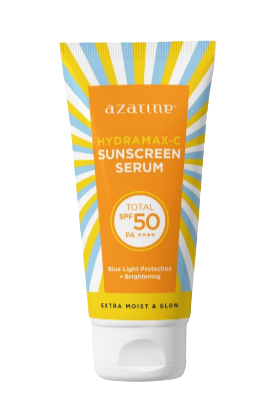
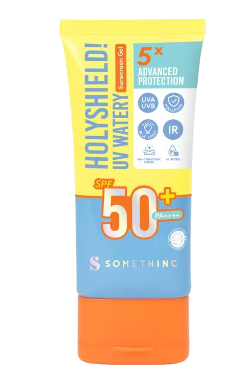

Tasya Farasya yang memiliki nama asli Lulu Farassiya ini merupakan beauty influencer wanita keturunan Arab yang lahir di Jakarta pada tahun 1992. Di kalangan orang-orang yang tertarik dengan dunia kecantikan, Tasya Farasya merupakan sosok yang namanya sudah tidak asing lagi,
karena video-video yang diunggahnya ke YouTube dan Instagramnya selalu berhasil menarik perhatian sehingga views-nya mencapai ratusan ribu hingga jutaan.
Sebagai beauty influencer, Tasya Farasya kerap dijadikan role model oleh kaum hawa sebelum membeli produk skincare tertentu. Ini karena review yang Tasya berikan di kanal youtube dan instagramnya terhadap suatu produk terbilang jujur dan terpercaya. Untuk produk yang benar-benar bagus menurut Tasya,
ia tak segan memberikan label Tasya Farasya Approved pada produk tersebut. Menariknya, kebanyakan produk yang berhasil mendapatkan label Tasya Farasya Approved sering kali menjadi sangat laris manis di pasaran dan menjadi viral. Salah satu produk skincare yang Tasya review ialah sunscreen.
Sesuai namanya, sunscreen atau tabir surya adalah produk perawatan kulit yang penggunaannya ditujukan untuk melindungi kulit dari sinar matahari, terutama dari kerusakan kulit yang diakibatkan oleh paparan sinar UV. Buruknya polusi udara juga mengandung zat berbahaya yang merusak kulit. Nah, kali ini kita akan mengulas apa saja produk sunscreen yang mendapat label Tasya Farasya Approved.
ANESSA Perfect UV Sunscreen Skincare Milk
Sunscreen No. 1 di Jepang selama 21 tahun berturut-turut dengan SPF50+ dan PA++++ (broad spectrum) untuk melindungi kulit dari sinar UV serta polusi yang tahan panas, kelembapan, air, dan keringat. Mencegah penuaan dini dengan formula skincare dan dilengkapi dengan inovasi SUNstainable yang ramah lingkungan. Memberikan hasil akhir yang velvet matte pada kulit. Mencegah penuaan dini dan keriput akibat sinar UVA dan UVB dengan Anti-wrinkle Formula yang dilengkapi dengan 50% Skincare Ingredients. Kulit menjadi sehat dan awet muda.
Azarine Hydramax-C Sunscreen Serum

Tabir surya Azarine Hydramax C Sunscreen Serum yang berbentuk gel ini dapat digunakan untuk melembabkan & melindungi kulit dari pengaruh buruk sinar matahari. Diformulasikan dengan berbagai ukuran hyaluronic acid untuk melembabkan di berbagai lapisan kulit. Hasil akhir wajah akan tampak glowing dan kenyal. Tekstur gel ini terasa dingin dan ringan, sehingga mudah diserap serta tidak meninggalkan whitecast pada kulit. Cocok untuk kulit kering, normal, dan kombinasi.
Somethinc Holyshield! UV Watery Sunscreen Gel SPF 50+ PA++++

Somethinc Sunscreen UV Watery Sunscreen Gel dengan SPF 50+ PA++++ & teknologi Encapsulated UV Filter yang memberikan proteksi lebih maksimal dari sinar UVA & UVB. Somethinc SPF 50 ini dilengkapi dengan proteksi terhadap Polusi, Blue-Light, & Infra-Red untuk mencegah tanda penuaan dini. Dengan Snowflake Molecules yang memberikan sensasi dingin & menyerap langsung seperti air, nyaman digunakan sepanjang hari, bebas alkohol, tidak lengket, Healthy-Glow finish, Fungal Acne Friendly serta no white-cast.
Berikut ini adalah urutan produk sunscreen yang mendapat label Tasya Farasya dari yang termurah sampai yang termahal di E-Commerce Shopee :
| PRODUK | UKURAN | HARGA |
|---|---|---|
| Azarine Hydramax-C Sunscreen Serum | 40 ml | Rp61.600 |
| Facetology Triple Care Sunscreen | 40 ml | Rp71.910 |
| Somethinc Holyshield! UV Watery Sunscreen Gel SPF 50+ PA++++ | 50 gr | Rp125.000 |